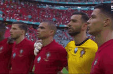

Portugal
Selección de Portugal: Historial Mundialista

- Mejor Actuación: Tercer lugar en 1966, liderados por Eusébio.
- Participaciones: Inglaterra 1966, México 1986, Corea-Japón 2002, Alemania 2006, Sudáfrica 2010, Brasil 2014, Rusia 2018, Catar 2022 y la clasificada 2026.
- Sede 2006:Cuarto lugar bajo la dirección de Luiz Felipe Scolari.
- Era Moderna: Desde 2002, Portugal ha participado ininterrumpidamente en todas las Copas del Mundo.